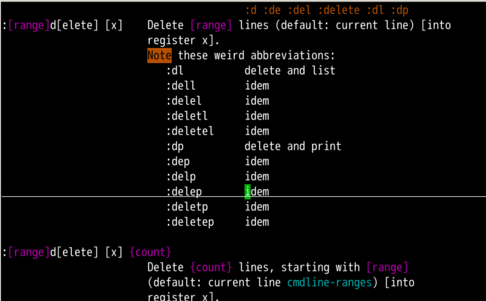
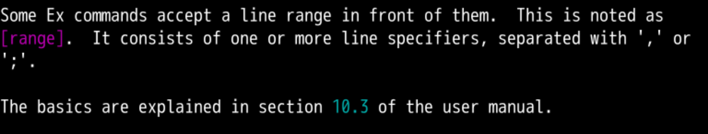
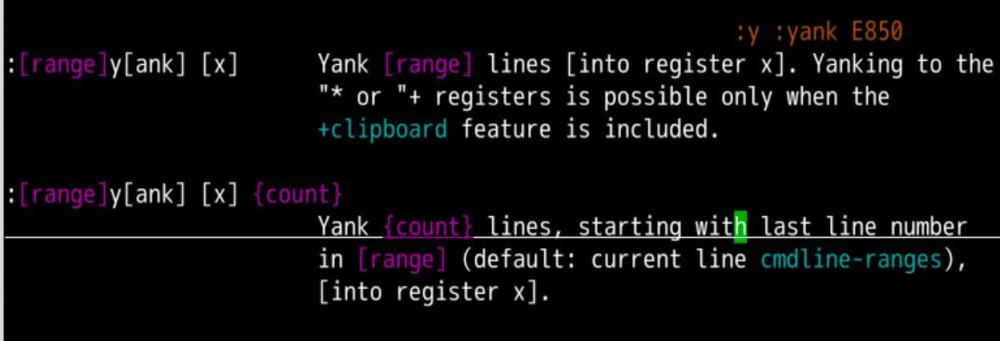
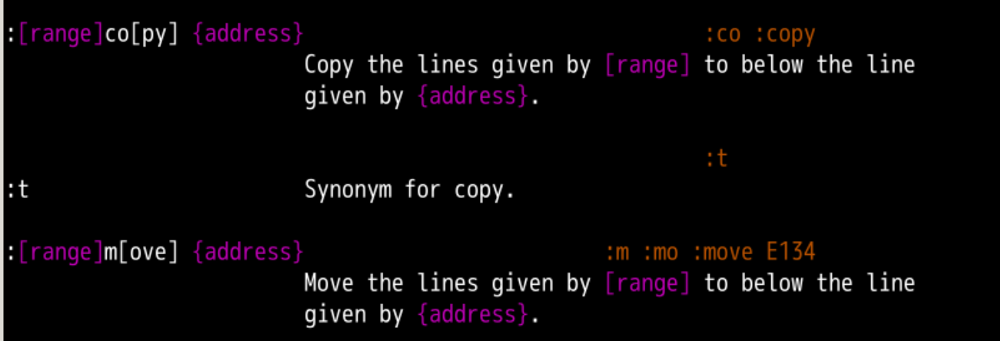

::h ::oeasy o2z o3zd 是 normal 模式下的删除命令:d 是 命令行 模式下的删除命令:h :d删除 的
:d 可以删除当前行[range] 是干什么用的呢？🤔h 什么呀！ :h range[range]范围
范围1,4 就是从第 1-4 行d 操作:1,4d 就是 1 - 4 行都删除:se nurange 可以复制 yank 吗？[range]yank 范围复制:h :y
2,5y 从 2-5 行都 yank 下来yank到了什么？:reg 看一下"a呢？:2,5y a"ap
:h :copy可以看到相关的帮助，如上图:t:5,8t20可以把5-8行拷贝到第20行下面:h m可以查询:move的用法:5,8m2可以把5-8行移动到第2行d 是删除y 是复制[range]范围:11,30d:2,7y:3,40y a:"aP:12,30t50，12-30行复制到50行:3,6m30,3-6行移动到30行[range] 还有什么说法吗？🤔